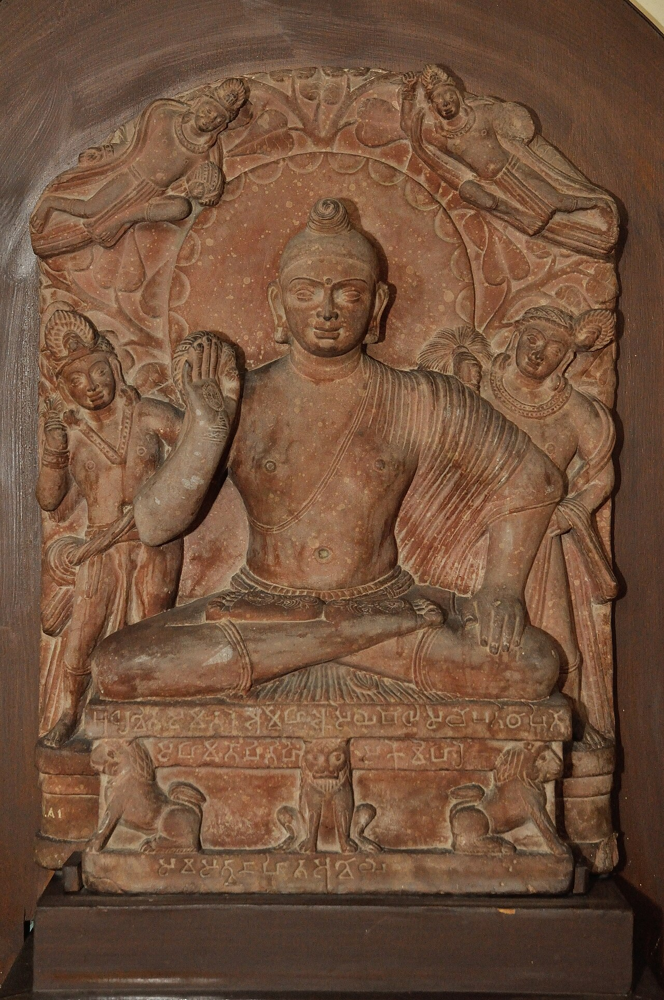
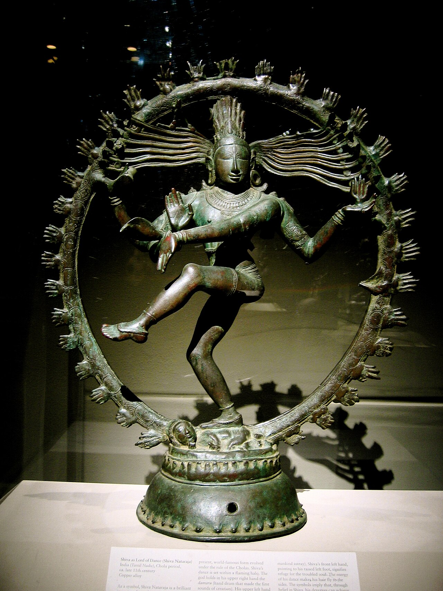
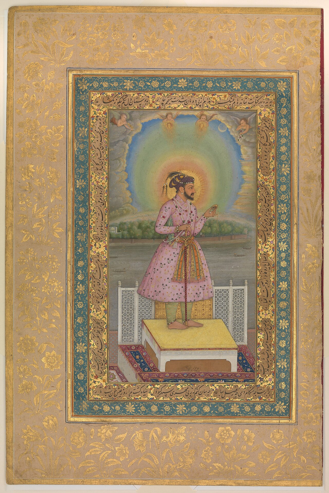

Indian Art
Through Time
Five millennia of sacred sculpture, dynamic bronzes, luminous miniatures, and monumental temple architecture.
The Artistic Landscape
Indian art developed through interconnected regional networks rather than a single imperial center. Trade routes, river valleys, and pilgrimage corridors facilitated continuous artistic exchange across the subcontinent.
The Medium Shapes the Art
Explore how ancient physical materials, sacred metallurgy, and mineral pigments dictated sculptural and pictorial expression across five millennia.

Stone Carving
From polished Mauryan sandstone to intricate Khajuraho details and soaring granite vimanas.
- Mirror-sheen Mauryan polishing on Chunar sandstone
- Red spotted Sikri sandstone full-prana modeling
- Monolithic interlocking granite joinery without mortar

Bronze Casting
The lost-wax (cire perdue) method utilized to perfection by Chola master artisans in Tamil Nadu.
- Hand-carved beeswax core with clay outer mould
- Panchaloha (sacred 5-metal copper alloy)
- Intricate hand-chiseled cold-work detail finishing

Opaque Pigment
Mughal and Rajput miniatures demanding exquisite single-hair brushwork on burnished wasli paper.
- Genuine lapis lazuli, malachite, and cinnabar minerals
- 24-karat gold leaf illumination & agate burnishing
- Micro-stippling (pardaz) with single-hair squirrel brushes